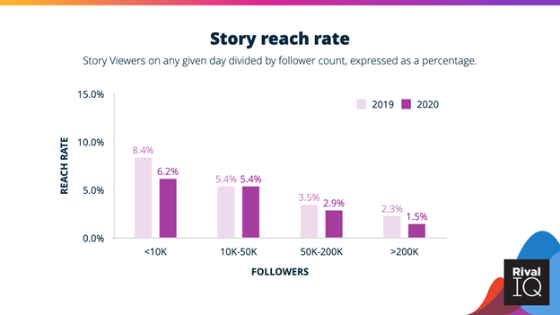
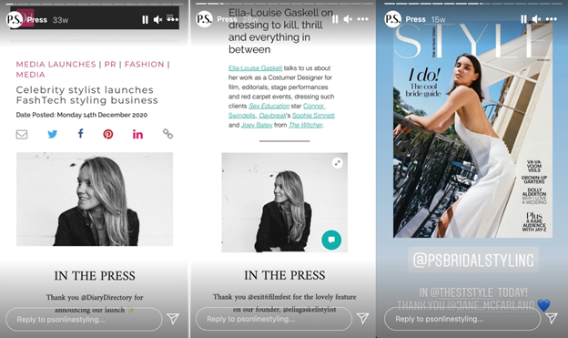
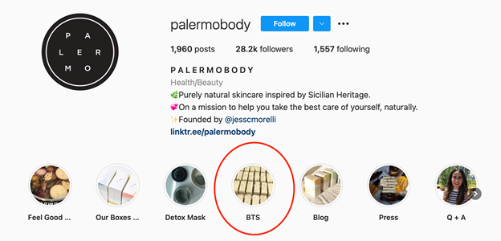
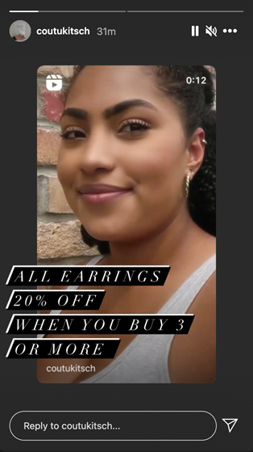
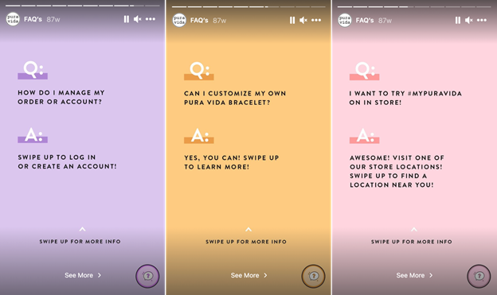
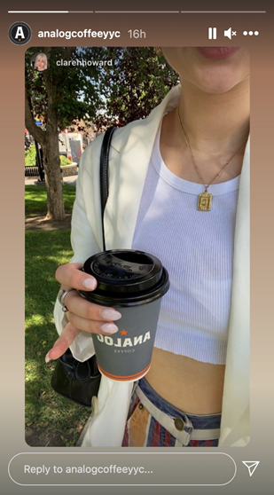
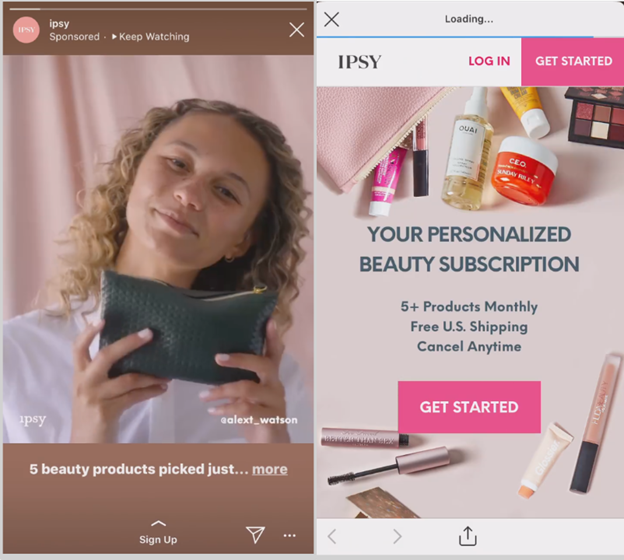

Back in 2010, when Instagram appeared, no one could have predicted it would become an important marketing tool for businesses of all sizes and niches.
With 1 billion monthly active users, 90% of whom follow at least one business account in-app and ⅔ of users say that Instagram enables interactions with brands, it has become a significant marketing communication channel for small businesses, too.
Look: 80% of customers research a small business before making a purchase and most people research Instagram as it has become one of the most-used social media platforms.
The days when small businesses had an option whether to have an Instagram presence or not are long gone.
Today, more and more small businesses choose Instagram as a communication channel with potential customers.
The competition is getting higher on the platform, so brands seek out new creative ways to cut through the noise and beat an Instagram algorithm. The solution? Instagram Stories!
Not only does Instagram Stories attract 500 million daily active users, but Stories also result in a higher reach rate which helps small businesses interact with hooked and engaged followers.

Taking into account the growing popularity of IG Stories, only a few small businesses make Instagram Stories a part of their Instagram marketing strategies even though there are many reasons to invest time and effort into creating ephemeral content in-app.
Let’s find out more now!
Why Should Small Businesses Use Instagram Stories?
At first glance, creating Instagram Stories that vanish within 24 hours can be a waste of time and budget for small businesses. Since Instagram prioritizes content from friends and family, using Instagram Stories is a great way to draw your followers in.
Here are the top three reasons why small businesses should use Instagram Stories:
- Interact with engaged Instagram users: With a short lifespan of 24 hours, Stories encourage users to watch ephemeral content in order not to miss out on something important. As a result, using Instagram Stories is a great way to interact with engaged users.
- Encourage viewers to take the desired action: Instagram Stories are limited to 15 seconds, so your viewers don’t have much time to think whether they are interested in your small business or its products. It creates a sense of urgency that encourages users to take the desired action, whether you want them to sign up for your email list, read more about your offer, or make a purchase.
- Stay ahead of your competitors: Despite the popularity of IG Stories among users, many small businesses are still afraid of Using Stories as a part of their marketing campaigns as it can be too time-consuming. When you use Stories, not only do you provide users with their preferred content type, but you also leave your competitors behind.
Now that you know the importance of Instagram Stories for small business promotion, let’s check out the best story features that help small businesses bring their companies to the next level.
5 Instagram Story Features for Small Business Promotion
In the last few years, Instagram Stories have become extremely popular among users. Thus, Instagram has rolled out a wide array of features that help both businesses and customers make the most out of using IG Stories.
Here are the top five Instagram Story features that work best for small business promotion:
- Location stickers and geo hashtags: 51% of people have discovered a new company or product when using their smartphones even if they are looking for a local business. With location stickers or geo hashtags, you can hint your viewers at your location or even reach a wider audience of potential customers who are interested in a particular area.
- Clickable story links: No matter what your business goal is, whether you want to capture leads, drive website traffic, or boost sales, you can use a clickable story link that redirects interested users to the right landing page and therefore provide viewers with more information to spark their interest.
- Shoppable tags: More than 80% of modern customers discover and buy products on Instagram, so it’s just a perfect place to market your products and provide interested viewers with more information to turn followers into customers. With shoppable tags, you can add product descriptions and prices and even help your followers buy without leaving the app.
- Poll stickers: For small business owners, the best way to acquire more customers and retain existing ones is to make sure that your products meet your target audience’s needs and wants. Thus, doing market research is important and an Instagram poll sticker is an interactive feature that allows you to gather customer feedback and understand your audience better.
- Profile tags: The best way for small businesses to achieve growth is to make sure that your customers trust your company and therefore choose it over other options on the market. To provide followers with social proof and increase brand trust, it’s a good idea to add profile tags when reposting user-generated content. It may sound easy, but this strategy is extremely effective!
As you can see, there are many Instagram Story features for small business promotion. To help your small business start using Instagram Stories, we’ve also gathered the list of Instagram Story ideas that work best for small businesses.
1. Tell More About Your Small Business and Products
No matter how good your unique selling proposition is, it means nothing unless you have people who are interested in giving it a try. It’s nearly impossible to convince people to test your products when they don’t know about your company.
The more people know about your small business, the more potential customers you can acquire. With ephemeral content, you can tell your viewers everything you want them to know about your small business and products without clogging the main feed up with content.
For example, a shopping platform P.S. Styling has decided to repost press mentions to Instagram Stories. Not only does it provide viewers with information on the company’s products and services, but it also helps to increase brand trust as people pay close attention to brand endorsements.

Instagram Stories vanish within 24 hours, but you can make some of them live permanently on your profile if you use Instagram Story Highlights. Grouping relevant Stories in separate albums, you can help other Instagram users understand more about your small business when visiting your account as these albums appear right below the bio section.
2. Humanize Your Brand with Behind the Scenes Content
With the great variety of nearly identical products, the modern market has become oversaturated which means selling to your customers is getting customers. People are spoiled with the array of products, so they pay close attention to brands they trust.
The best way for small businesses to cut through the noise and increase brand trust is to humanize their brand. Today, customers seek out authentic behind-the-scenes content that makes them feel closer to the brand. With a short lifespan, Instagram Stories offer a great platform to show off your behind-the-scenes content.
Behind-the-scenes content comes in various forms, whether you decide to introduce your team members, show a typical workday of your company, or tell more about the product creation process. To humanize your brand, you can post authentic content and save it as Story Highlights, just like in the example below:

3. Spark Interest in Your Product Variety
Having a product variety is a great marketing tactic that allows business owners to attract different customers with different needs and wants. Showing off your products in Instagram Stories is great, but you can also use some tricks to spark interest in your product variety.
Let’s take a look at the example below. The jewelry company made an Instagram Reel present its collection of products, reposted it to Instagram Stories, and added a special offer that could encourage viewers to buy several products and therefore get a discount.

If you want to promote your products, not only should you post videos or photos of these products in Stories, but you should also make sure that your Stories look cohesive. The best way to do it is to use the same Instagram filters. According to Sellfy, using the same Instagram filters help to improve the look and feel of your Instagram Stories and make your content match your brand identity.
4. Cause a Buzz Around Your Small Business
When you’re just starting on Instagram, it’s more likely that you don’t have many followers who might be interested in your Instagram Stories. First, it’s important to cause a buzz around your small business and there’s one proven way to use Instagram Stories for small business promotion that can result in more Instagram followers or even potential customers–a collaboration with influencers.
Modern customers trust recommendations from social media influencers, so they are more likely to become interested in your small business or your products after seeing them in Stories from favorite influencers.
The easiest way to cause a buzz around your small business with influencer endorsements is to send your products to the right influencer for a product review. It’s a great way to encourage an influencer to test your products, share her/his thoughts, and promote featured items.
Here’s an example of collaboration between one fashion influencer and Zaful:
Want to know the best part? Working with Instagram influencers who have more than 10K followers, not only can you market your products in their Stories, but you can also ask them to add a clickable Story link that can redirect interested followers to the right landing page where you can provide them with more information about your business or products.
5. Encourage Followers to Join a Conversation
Small business promotion is not just about selling more products; it’s also about making an emotional bond with existing customers. Instagram Stories have the right features to start a conversation with your followers, ask them about their preferences, or even turn your followers into brand advocates. Moreover, people trust brands that listen to their feedback and implement it.
To hook your followers’ attention and understand your customers better, it’s important to encourage followers to join a conversation. For example, you can post several photos of your products, add a poll sticker, and invite your followers to vote for their choice. Or, you can include a question sticker that encourages users to leave their worries and concerns to explain everything they want to know about your business or get in touch to provide customer support.
Another way to start a conversation with your followers via IG Stories is to repurpose FAQs that can ease the worried minds of potential customers and encourage other people to ask you questions about your business and products. Check out how Pura Vida did it:

If you want to create similar cohesive Instagram Stories for your small business, you can rely on a free Instagram Story maker as it offers a great number of professionally-made templates and custom functions like adding a logo or fonts. It’s a perfect way to make unique Stories without hiring a designer!
6. Highlight Your Satisfied Customers
Living in the digital era, when customers can do research online to find out whether your business can suit their needs, the importance of positive customer reviews is obvious. Before making a purchase, potential customers want to read customer stories as these reviews can help them understand whether your product is right for them. In other words, customers seek out social proof.
To increase brand trust and turn more followers into customers, it’s a good idea to highlight your satisfied customers in Stories that can serve as social proof. For example, when someone writes a review on your product or takes a photo of themselves with a profile tag, you can repost these Stories to your account, just like in the example below:

7. Educate Followers on How to Use Your Products
Whether you sell products or services, it’s important to help your potential customers understand how your small business can solve their problems. To educate followers on how to use your products, you can create short yet informative explainer videos or graphics.
Here’s an example of this strategy in action from the wedding planning website Rock My Wedding. Knowing their customers’ pain points, the company provided viewers with handy information on how to start planning a wedding:
If you want to WOW your followers, you can create long-form explainer or how-to tutorial videos that tell everything potential customers should know about your products and upload them to your IGTV channel. Then, you can repost these videos to Instagram Stories and therefore grab viewers’ attention to previously published content.
8. Run an Instagram Story Ad Campaign
Instagram has become an effective marketing tool, so it’s no wonder that over 25 million businesses promote their products in-app. This means the difficulty of reaching potential customers in-app for small businesses unless they run paid ad campaigns.
Luckily, Instagram advertising offers advanced features that help businesses of all sizes and niches deliver their ads to the right audience and it gives wonderful results.
Let’s take a look at IPSY. When the brand decided to reach a wider audience of potential customers, it made Instagram Story video ads that told viewers about various products and included a Story link with a strong CTA that encouraged viewers to sign up for their newsletter.

The campaign got an 8.5X increase in sales from ads in Instagram Stories, a 6.9X more people reached by ads in Instagram Stories, and a 39% increase in overall sales.
So, wouldn’t it be amazing if you could create outstanding Instagram ads that reach a wider audience of potential customers? To keep up with current trends, you can create animated commercials as dynamic and colorful ads result in a 30% higher engagement rate that can help your small business promotion.
In a Word
Instagram is an important marketing channel for small business owners who want to market their products or services, reach potential customers, interact with the target audience, and boost eCommerce sales. However, having an Instagram presence isn’t enough to get results, so small businesses should keep up with trends, and using Instagram Stories is a must.
Nowadays, there are many creative ways to make ephemeral content that promotes your small business while keeping your audience engaged, so it’s important to test with Instagram Stories and find out what works best for your business.
So, are you ready to use Instagram Stories for small business promotion? Let us know your thoughts on it!
About the Author
Val Razo is a freelance SMM consultant with 6 years of digital marketing expertise, who helps small and medium businesses establish a social media presence and market their products online. She also writes for marketing blogs like SocialMediaExaminer, Hubspot, and Wordstream.
Leave a Reply